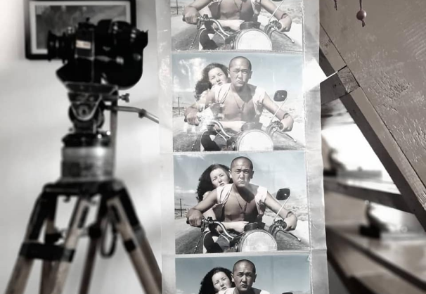

{% extends 'main/base.html' %}
{% block title %}
about
{% endblock %}
{% block content %}

"На "Маймыле" снимали эпизод с Зиной, по сюжету она шла по обочине и останавливала машины. Съёмочная площадка находилась между Балыкчы и Кок-Мойноком, на безлюдной трассе. Камера с длиннофокусным объективом была на расстоянии от неё и, таким образом, добивались излюбленного операторами контрового рисунка с размытым фоном.
И вдруг, не подчиняясь оцеплению, за нами выскочил мерседес и на полном ходу сбил актрису. До сих пор перед глазами, как от удара подлетела словно кукла и рухнула на землю. Я с трудом добежал до Зины, страх за её судьбу сковал моё сердце. Мы осторожно занесли в машину, она стонала и плакала пока добрались до больницы.
После осмотра врачей, выяснилось, у Зины перелом руки и ушибы. Спасла от тяжких последствий пышная фигура. Она была своеобразной красоты, словно сошла с картин Рубенса.
И в сцене, когда Маймыл с друзьями подкрадываются к спящей на кровати пьяной Зине, рука ее была в гипсе, мизансцену построили так, чтобы не было видно.
Мировая премьера "Маймыла" состоялась в Каннах, и дирекция фестиваля пригласила в составе делегации и Зину. Перед самым отъездом, в корридоре "Кыргызфильма", оказывается, её встретил, тогда ещё живой, наш выдающийся актёр Болот Бейшеналиев и сказал: "Я всю жизнь мечтал поехать в Канны... Поздравляю Вас и белой завистью завидую Вам!"
После показа в Каннах, во время вопросов-ответов, когда узнали, что блудницу Зину сыграла учительница начальных классов из Балыкчы Александра Митрохина, зал восторженно смеялся и бурно аплодировал".
{% endblock %}